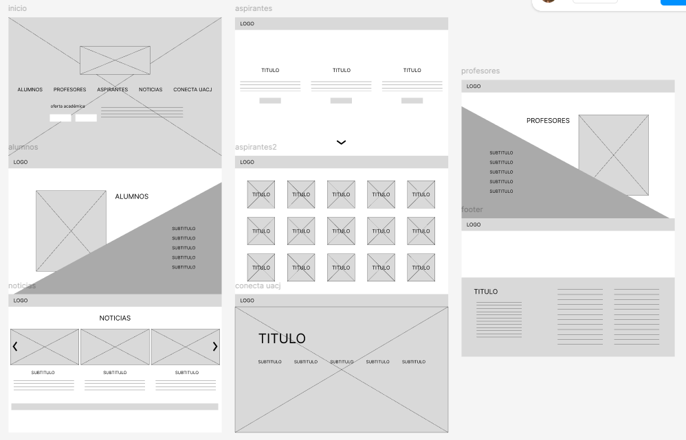
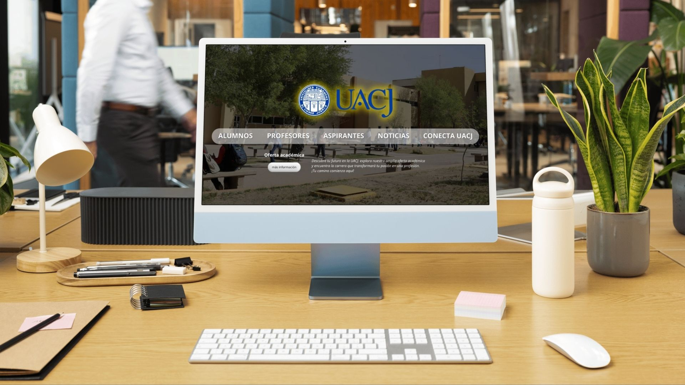
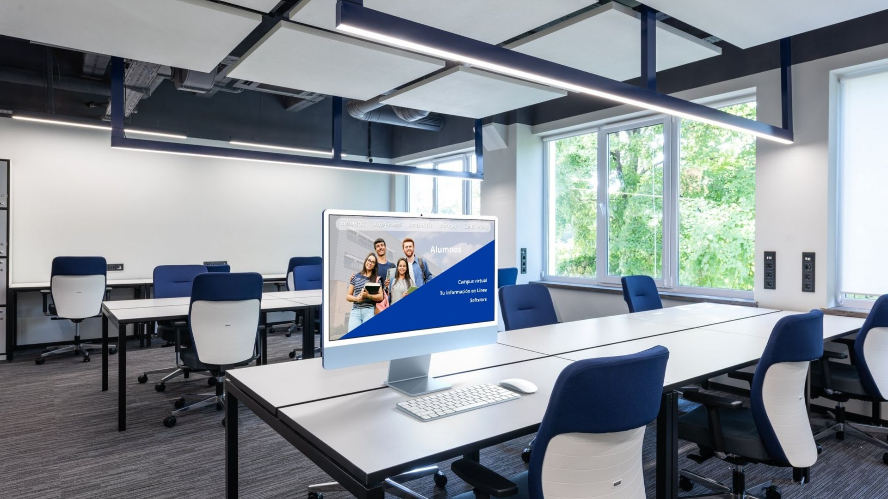
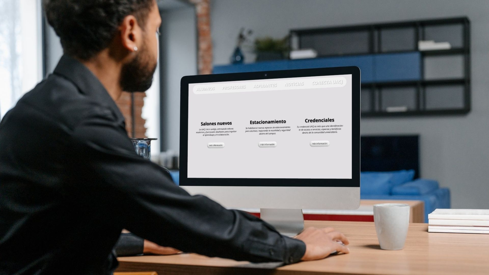
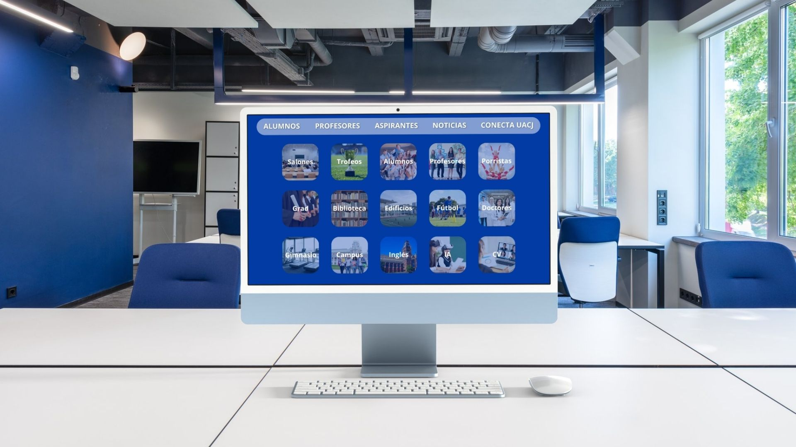
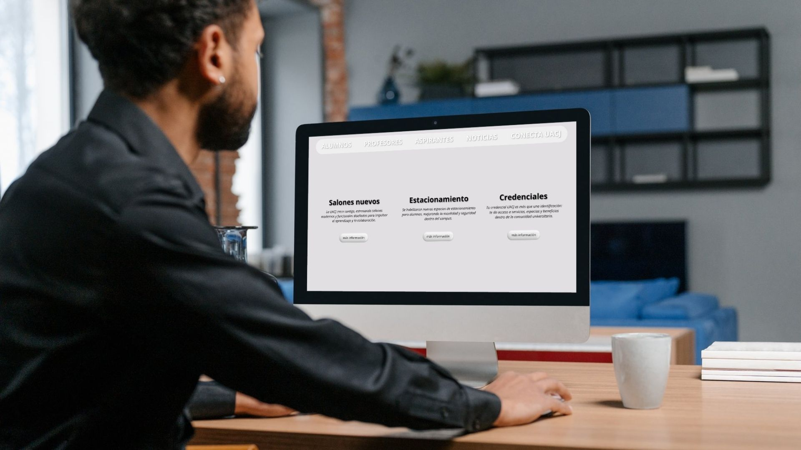
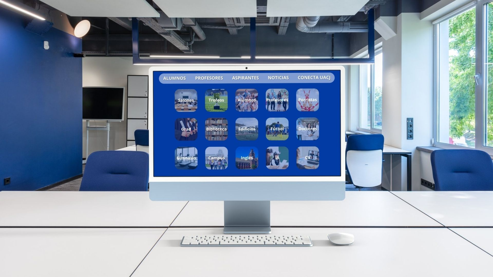
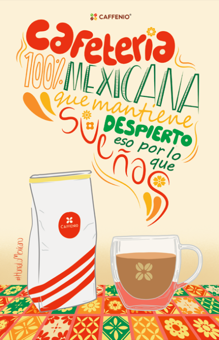
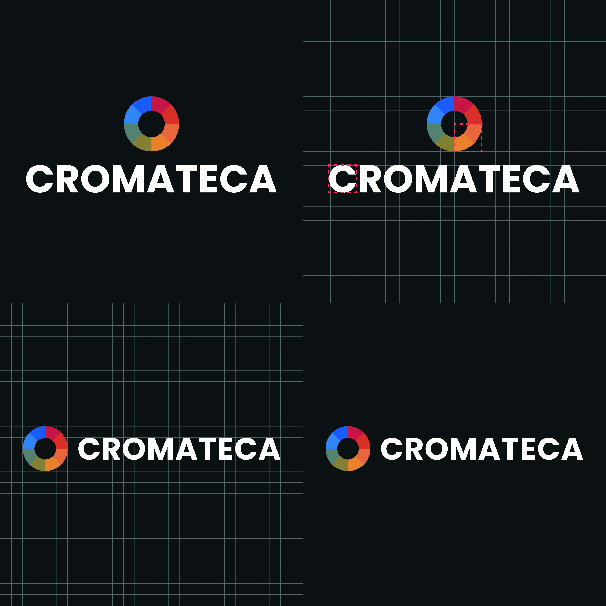

Bitácora - Clase de Diseño Web | 2025
Unidad 2
Uso del <div> y SEO
El elemento <div> sirve para organizar el contenido de una página agrupando elementos dentro de un contenedor. En esta unidad también vimos la importancia del SEO (Search Engine Optimization), que nos ayuda a aparecer al inicio de las búsquedas en Google mediante el uso correcto de etiquetas, títulos y metadatos.
Además, utilizamos padding para crear un margen interior entre el contenido y el borde del contenedor, lo cual mejora la legibilidad y el diseño visual.
Tema 3 – Prototipado
Existen diferentes tipos de prototipado en diseño web:
Uso de CSS Gradient y Border CSS Generator
Estas herramientas permiten generar fondos degradados y bordes personalizados de manera sencilla, facilitando la creación de diseños más atractivos en nuestras páginas web. Aquí utilizamos un ejemplo de gradient aplicado al bloque superior.
Actividades
Bocetos:

Wireframes estáticos:
Mapa de sitio:

Mockups
  



Lectura de esquemática – Joan Costa:
Costa plantea que el gráfico no solo informa, sino que también explica, persuade y facilita la comprensión mediante recursos visuales (formas, símbolos, jerarquías, diagramas).
Es decir, el gráfico es un instrumento didáctico dentro de la comunicación visual.
Este cartel publicitario de Caffenio es un ejemplo que informa que el café es 100% mexicano e invita al lector a degustar de su sabor, haciendo uso de la tipografía para transmitir la calidez de la bebida.
Tema 4 – Logo
|  |
|
||
|---|---|---|---|
|
El logo de Cromateca representa a un negocio dedicado a vender artículos para arte. Se utilizó una retícula como base para garantizar proporciones equilibradas y un diseño limpio. |
Este es un ejemplo de icono para app (iOS), diseñado para que sea identificable, simple y adaptado a diferentes tamaños de pantalla. |

Tema 5 – Static, Absolute, Fixed y Sticky
Estos son valores de la propiedad position en CSS que definen cómo se ubican los elementos en la página:
- Static: Posición por defecto, sigue el flujo normal del documento.
- Absolute: Se coloca en relación al contenedor padre con posición relativa.
- Fixed: Permanece fijo en la pantalla aunque se haga scroll.
- Sticky: Se comporta como relative pero al llegar a un punto definido se mantiene fijo.
Uso de las etiquetas <table>
La etiqueta <table> se utiliza en HTML para crear tablas que organizan información en filas y columnas.
Dentro de ella se usan otras etiquetas como <tr> (fila), <th> (encabezado de columna)
y <td> (celda de datos).
Por ejemplo:
<table>
<tr>
<th>Nombre</th>
<th>Edad</th>
</tr>
<tr>
<td>Eva</td>
<td>22</td>
</tr>
</table>
Este código crea una tabla con dos columnas: “Nombre” y “Edad”, y una fila de datos debajo. Las tablas permiten presentar información de forma clara, ordenada y visualmente estructurada.
Proyecto 2 – Página web en equipo
En esta sección se presenta el Proyecto 2 de la materia de Diseño Web, el cual consistió en la creación de una página web en equipo. Durante este proyecto aplicamos los conocimientos adquiridos a lo largo del curso, integrando estructura HTML, estilos CSS y elementos visuales que fortalecen la experiencia del usuario. El trabajo en equipo permitió definir una línea gráfica coherente, dividir las tareas de diseño y programación, y culminar con un resultado funcional y visualmente atractivo.
Ver en Canva: Proyecto 2 – Diseño Web